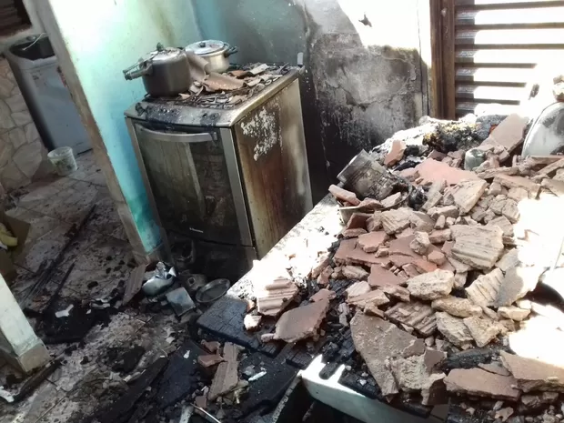

Você estava dentro de taboão da serra e começou um tiroteio,você tem de decidir qual caminho seguir
Você corre até encontrar uma casa aonde te oferecem abrigo.
Você corre e se refujia em um lugar chamado UPA-Unidade de Pronto Alcool,era um bar
Você passa em segurança e espera o tiroteio acabar e sobrevive

Você continuou correndo,acham que você é bandido e te pipocam de bala
Os policiais chegam no bar com fome,você da sua coxinha eles te levam pra casa em segurança pela já que você deu coxinha a eles

Os policiais chegam no bar e ouvem um barulho na cozinha,ao ouvir o barulho na cozinha eles papocam de bala a cozinha uma delas pega no botijão de gás,tudo explode e você virou camisa de saudade